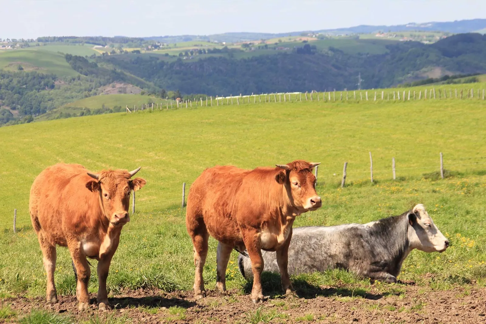
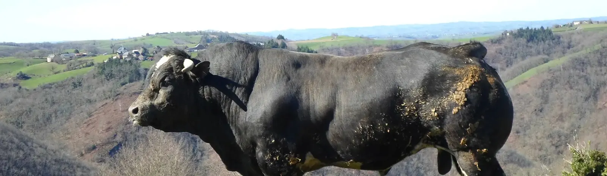
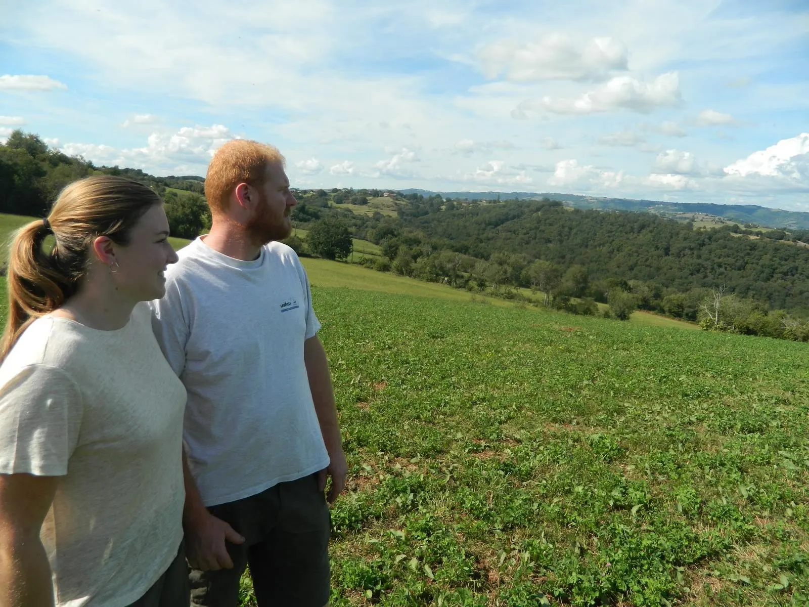
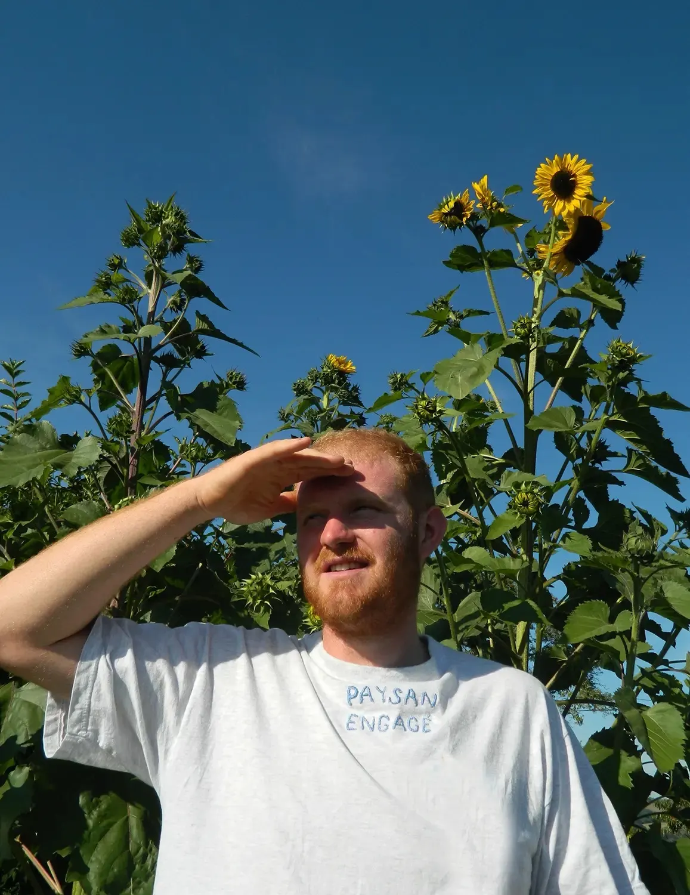
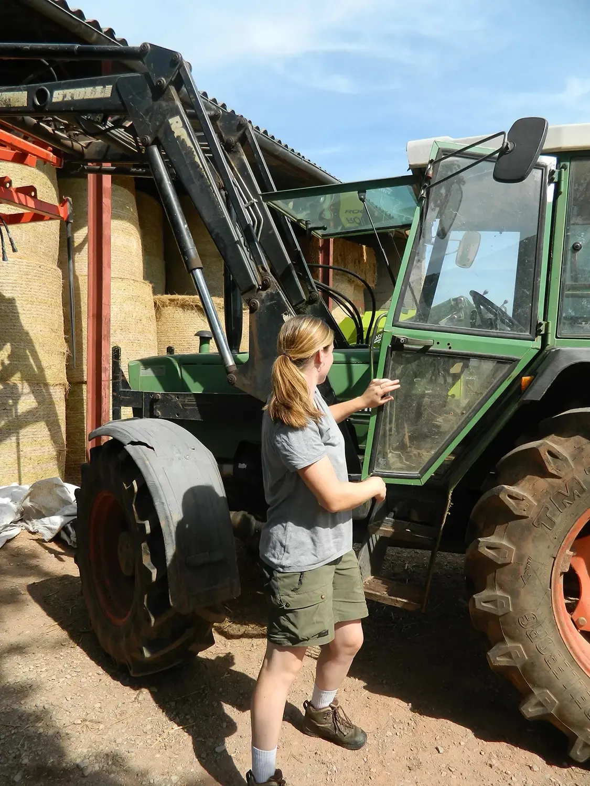
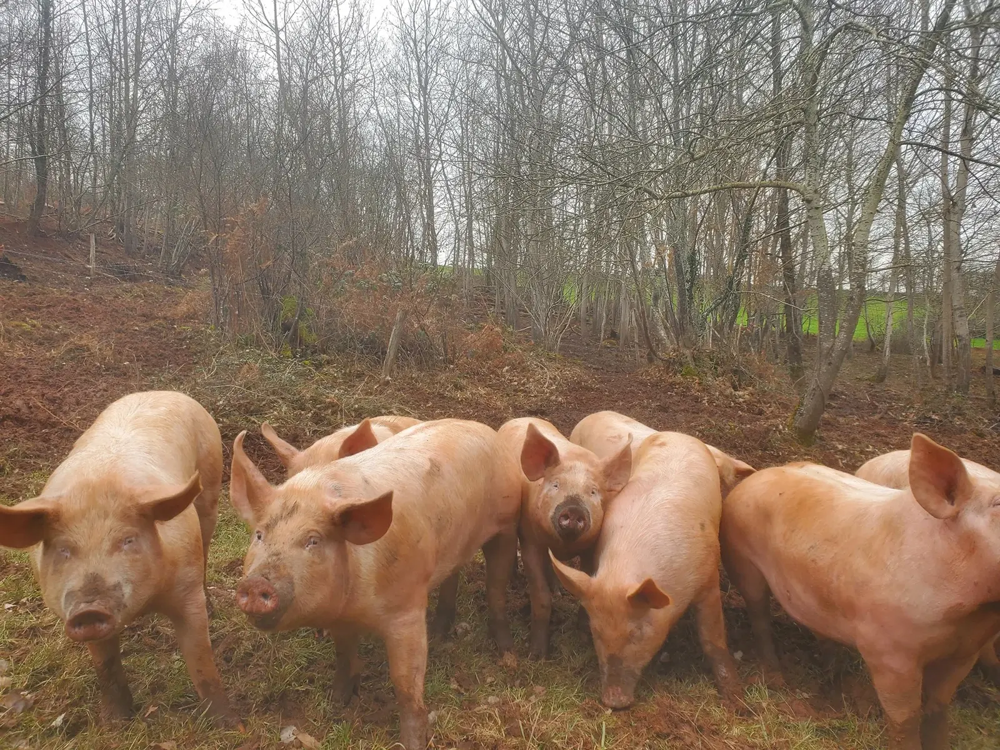
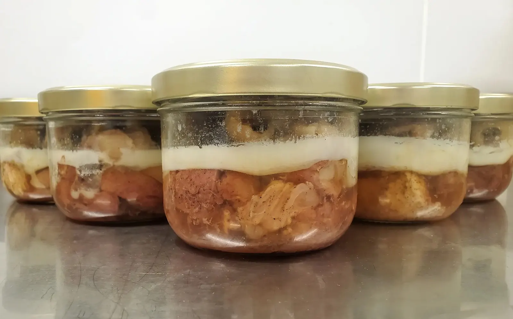
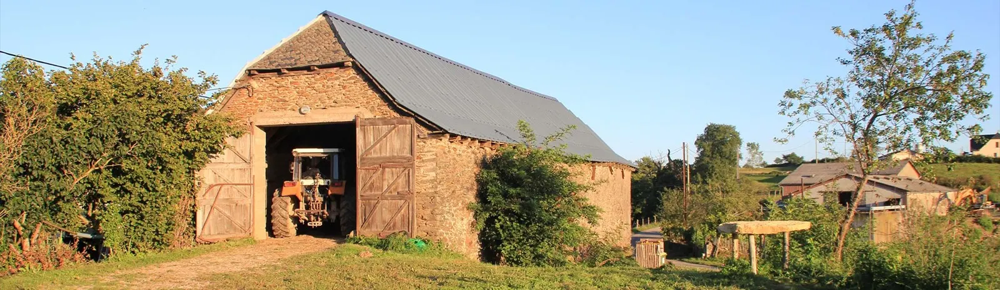

Ferme B del Puech, Grand-Vabre, Aveyron
Notre bœuf bio, élevé en plein air près de Conques
Une ferme familiale transmise depuis trois générations, reprise par Elian en 2013 et rejointe par sa sœur Flore en 2021. Nos animaux sont élevés sur la ferme en plein air et nourris à base de céréales germées. Nous vous proposons notre viande de bœuf chaque semaine en vente directe.

Bio et Bleu-Blanc-Cœur- ConquesLe Périé, Grand-Vabre, Aveyron
- 3 générationsde ferme familiale
- Ecocertviandes certifiées bio, bœuf Bleu-Blanc-Cœur
- Céréales germées8 céréales et légumineuses de la ferme
- 20 €/kgles colis de bœuf bio

Élevé en plein air, en AveyronLes colis de bœuf bio
Notre viande de bœuf, bio et Bleu-Blanc-Cœur, en vente directe chaque semaine. Chaque colis est au même prix au kilo : choisissez selon ce que vous aimez cuisiner.
Colis « Traditionnel »
20,00 €/kgUne découpe à l'ancienne, notre bœuf dans son plus simple appareil : à rôtir, à griller et à mijoter.
Colis « Tout à Griller »
20,00 €/kgUn colis qui porte bien son nom !
Colis « Musclés »
20,00 €/kgIl n'y a pas d'âge pour apprécier nos steaks hachés assaisonnés. Laissez-les vous surprendre !
Colis « du Boucher »
20,00 €/kgCe soir, ce sera mijoté ou grillé ? Un colis famille par excellence !
Aussi à la boutique : viande hachée moulée à 22,00 €/kg, saucisse sèche de bœuf à 50,00 €/kg, bœuf séché à 60,00 €/kg.
Comment ça marche ?
Les commandes se font par mail, par téléphone (SMS ou appel) ou par le formulaire de contact. Flore vous répond pour valider la disponibilité des produits.
- Je choisis mon mode de livraisonPoint de retrait près de la ferme, tournée dans le Gard et l'Hérault, ou expédition à domicile.
- Je m'inscris à la newsletterChaque semaine, elle annonce les propositions et vous permet de commander le week-end précédent.
- Je commande par mail ou SMSAu 06 95 53 93 54, à contact@bdelpuech.fr ou par le formulaire.
- Flore me répondElle valide la disponibilité ; la commande est préparée le mercredi ou le jeudi.
Près de chez nous
- Autrement Découpe, à St Christophe-Vallon
- Cocci Market, à St Cyprien sur Dourdou
- Lou Mountagnol, à Firmi
Dans le Gard et l'Hérault
Points de livraison et marchés. Chaque week-end, le camion frigorifique part en tournée.
Chez vous
Expédition à domicile par Chronofresh, de 38 € TTC (0 à 5 kg) à 49 € TTC (15 à 20 kg), livrée en général le mercredi matin.
Découpes de porc, de veau, d'agneau et de poulet : nos clients en sont avertis tout au long de l'année par la newsletter hebdomadaire.
L'histoire de B del Puech
À l'origine, B del Puech est une ferme familiale qui existe depuis de nombreuses générations, sur les hauteurs du vallon de Marcillac et du plateau de la Vidène, près de Conques. En 2013, Elian, qui a baigné dans le monde agricole depuis l'enfance, reprend la ferme de famille pour perpétuer l'héritage de ses parents et grands-parents, en alliant savoir-faire ancestral et pratiques plus modernes.
En 2021, Flore, sa sœur, le rejoint pour continuer à deux ce beau projet. Aujourd'hui, la ferme, ce sont deux associés, Flore et Elian, deux salariés, Thomas et Jean-Pierre (le papa), et deux bénévoles d'un grand soutien, Maxime et Corinne (la maman).




Nos porcs, sous les châtaigniers
Au fil de l'année, à côté du bœuf
Le porc plein air
Une vingtaine de porcs élevés en total plein air dans nos bois de châtaigniers, comme les gardait notre grand-mère. À l'automne, ils sont friands des glands et des châtaignes.
Le poulet
Né d'une demande de nos clients : une volaille entière, comme la faisait notre maman. 15 m² de parcours par poulet, sous des noyers et des châtaigniers centenaires.
Les conserves
Depuis 2014 et la recette aveyronnaise de tripes à la tomate de notre maman. En 2020, Elian crée « Autrement Découpe », notre atelier de découpe, puis un espace cuisine pour les conserves et les plats préparés.
L'agneau
Celui de Joël Delagnes, notre ami éleveur.

Nous contacter
C'est avec plaisir que nous répondrons à vos questions : appelez Flore, envoyez un SMS ou laissez-nous un message.
- Téléphone
- 06 95 53 93 54
- La ferme
- GAEC B del Puech
Le Périé, Grand-Vabre
12320 Conques-en-Rouergue